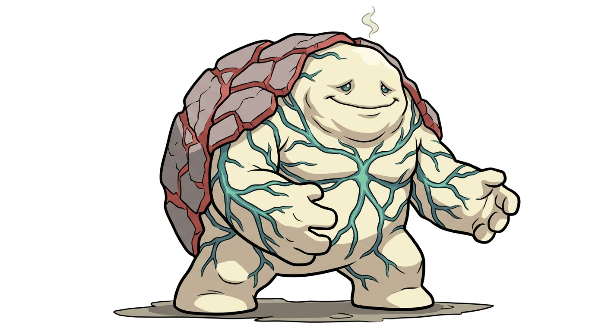

| Tipo | Normale Veleno |
|---|---|
| Abilità | Sazietà (prima) Fermentazione (speciale) |
| Sesso | 50% maschi · 50% femmine |
| Altezza | 1,4 m |
| Peso | 95,0 kg |
| Tasso di cattura | 90 (21,7%) |
| Uovo | Gruppi Amorfo e Campo 20 cicli (min. 5120 passi) |
| Pokédex regionali | Martemon #014 |
| Tasso di allevamento | Medio-veloce |
| Esperienza base ceduta | 250 |
| Punti base ceduti | Totale: 3 — Dif. Sp. 3 |
| Colore Pokédex | Verde |
| Affetto di base | 70 |
Gorgonzola è un Pokémon di tipo Normale/Veleno, forma finale della linea dei formaggi della Martesana. Esiste in due forme, la Forma Piccante (Normale/Veleno) e la Forma Dolce (Normale/Folletto).
Si evolve da Crescenzio salendo di livello mentre è avvelenato, a partire dal livello 38; Crescenzio a sua volta si evolve da Stracchetto dal livello 20.
Gorgonzola è un blocco enorme di pasta cremosa color avorio, alto quasi un metro e mezzo e largo altrettanto, lento e pesante, che si muove a scatti come un mostro dei film e poi si ferma a riprendere fiato. La crosta, tratto di famiglia arrivato a compimento, è grigio-rossastra, spessa, e si apre a placche sulla schiena e sulle spalle; da sotto affiorano le venature blu-verdi che gli scorrono dentro come vene e che, quando si agita, pulsano. Ha due occhi piccoli e gentili in mezzo a tutto questo, e una bocca larga che sembra sempre sorridere. L'odore arriva prima di lui.
La Forma Dolce è più chiara e più morbida, con la crosta sottile e le venature rade e verdi; la Forma Piccante è più stagionata, con la crosta più scura e le venature fitte e blu.
Non vi sono differenze visibili tra maschi e femmine.
Sembra un mostro ed è il Pokémon più affettuoso del dex. Gorgonzola avanza lento per l'alzaia con la crosta che scricchiola, i bambini scappano e i cani abbaiano, e lui non capisce perché: vuole solo farsi assaggiare. Chi ha il coraggio di avvicinarsi scopre un carattere tenerissimo, paziente, che non attacca mai per primo e che si lascia appoggiare la testa addosso. Chi lo assaggia una volta non lo lascia più. Ha un solo difetto: lo sente tutta la Martesana, e a Cassina de' Pecchi sanno quando è di buon umore.
Gorgonzola, il paese in fondo alla Martesana da cui prende il nome, dove il Naviglio passa in mezzo al centro. Un Gorgonzola vive nel paese e non lo lascia: ne esistono pochi, ognuno con la sua cantina o il suo portico, e in settembre si mettono in piazza per la sagra.
Latte, molto, e tutto il resto. Non ha più fame come Crescenzio, ma mangia comunque, per abitudine e per cortesia. Con l'abilità Fermentazione digerisce anche quello che gli altri Pokémon non toccherebbero, e ne esce meglio di prima.
La Forma Piccante resta debole alla Lotta come gli stadi precedenti, e il tipo Veleno le aggiunge Terra e Psico, ma in cambio le porta quattro resistenze; la Forma Dolce (Normale/Folletto) è invece debole ad Acciaio e Veleno, resiste a Coleottero e Buio, non teme più la Lotta ed è immune sia a Spettro sia a Drago.
Il muro speciale del dex: PS a 125, Difesa Speciale a 115, un Attacco Speciale a 90 che con Iper Voce e Fangobomba fa male, e una Velocità a 25 che è quella di un formaggio. Non colpisce quasi mai per primo e non gli serve: con Stagionatura le difese salgono ogni turno, con Fermentazione recupera, e l'avversario prima o poi si stanca. Contro Martesairone, che colpisce forte e in fisico, è l'unico del dex a poter aspettare.
| Lv. | Mossa | Tipo | Cat. | Pot. | Prec. | PP |
|---|---|---|---|---|---|---|
| Evo. | Stagionatura | Veleno | Stato | — | —% | 5 |
| Inizio | Azione | Normale | Fisico | 40 | 100% | 35 |
| Inizio | Colpocoda | Normale | Stato | — | 100% | 30 |
| 5 | Fortificazione | Normale | Stato | — | —% | 30 |
| 9 | Boato | Normale | Speciale | 60 | 100% | 15 |
| 13 | Spalmata | Normale | Fisico | 60 | 100% | 20 |
| 17 | Rotolamento | Roccia | Fisico | 30 | 90% | 20 |
| 20 | Comete | Normale | Speciale | 60 | —% | 20 |
| 24 | Corposcontro | Normale | Fisico | 85 | 100% | 15 |
| 28 | Riposo | Psico | Stato | — | —% | 5 |
| 33 | Iper Voce | Normale | Speciale | 90 | 100% | 10 |
| 36 | Stagionatura | Veleno | Stato | — | —% | 5 |
| 41 | Velenoshock | Veleno | Speciale | 65 | 100% | 10 |
| 47 | Fangobomba | Veleno | Speciale | 90 | 100% | 10 |
| 54 | Tossina | Veleno | Stato | — | 90% | 10 |
| 62 | Iper Raggio | Normale | Speciale | 150 | 90% | 5 |
| Mossa | Tipo | Cat. | Pot. | Prec. | PP |
|---|---|---|---|---|---|
| Protezione | Normale | Stato | — | —% | 10 |
| Sostituto | Normale | Stato | — | —% | 10 |
| Riposo | Psico | Stato | — | —% | 5 |
| Iper Raggio | Normale | Speciale | 150 | 90% | 5 |
| Tossina | Veleno | Stato | — | 90% | 10 |
| Fangobomba | Veleno | Speciale | 90 | 100% | 10 |
Il grassetto indica una mossa che ha il bonus di tipo (STAB) quando viene usata da un Gorgonzola. Spalmata è la mossa di famiglia della linea: chi la subisce resta appiccicato e perde un livello di Velocità.
Gorgonzola ha due forme, come il formaggio: la Forma Piccante, Normale/Veleno, più stagionata e venata, e la Forma Dolce, Normale/Folletto, più cremosa e chiara. La forma dipende da cosa ha mangiato Crescenzio prima di evolversi: una Bacca amara o piccante dà la Forma Piccante, una Bacca dolce dà la Forma Dolce. Le statistiche sono le stesse; cambiano il secondo tipo, le resistenze e alcune mosse: la Forma Dolce impara Vocedincanto e Carineria al posto di Velenoshock e Fangobomba, e Stagionatura le aumenta le difese senza avvelenarla.
Stagionatura è la mossa esclusiva di Gorgonzola. Tipo Veleno, categoria Stato, 5 PP. Gorgonzola si avvelena da solo e, finché resta avvelenato, a ogni fine turno la Difesa e la Difesa Speciale salgono di un livello; il veleno non gli toglie PS e, se ha l'abilità Fermentazione, gliene restituisce. Più passa il tempo, più è buono, e più è difficile da mandare giù.
Versione Lambro — Un blocco enorme di pasta color avorio con la crosta che si apre a placche e le venature blu-verdi che pulsano. L'odore arriva prima di lui.
Versione Martesana — Sembra un mostro ed è il Pokémon più affettuoso del dex: vuole solo farsi assaggiare. Chi lo assaggia una volta non lo lascia più.
Il paese in fondo al Naviglio. Una ventina di chilometri a est di Milano, dove la Martesana ha già lasciato le ville e attraversa la pianura dei campi e delle rogge, sta Gorgonzola: il Naviglio ci passa in mezzo, con i ponti e le case affacciate sull'acqua, e la fermata della metropolitana ha lo stesso nome del formaggio. Qui per secoli le mandrie che tornavano dagli alpeggi si fermavano, e il latte delle vacche stanche diventava lo "stracchino di Gorgonzola": si racconta che un casaro innamorato, per passare la sera con la sua bella, abbia lasciato la cagliata a metà e l'abbia unita il mattino dopo a quella nuova, e che le muffe verdi siano nate così. Il formaggio ha preso il nome del paese, la denominazione d'origine nel 1955 e la DOP nel 1996, e oggi si produce in una zona molto più larga, tra Lombardia e Piemonte; ma il paese è questo, e ogni anno gli dedica una sagra. I Gorgonzola stanno lì, all'ombra dei portici, e aspettano che qualcuno abbia il coraggio di assaggiarli.
Gorgonzola è il gorgonzola, il formaggio erborinato lombardo a pasta cruda, fatto con latte intero di vacca a cui si aggiungono le spore di una muffa, il Penicillium roqueforti, che stagionando disegna le venature blu-verdi; le forme vengono forate con aghi perché l'aria entri e la muffa cresca. Esiste davvero in due tipi, il dolce, stagionato meno e cremoso, e il piccante, stagionato più a lungo e più deciso: da lì le due forme del Pokémon. Il tipo Veleno viene dalla muffa, la categoria dall'erborinatura, il carattere dal fatto che fa paura a vederlo e nessuno lo lascia più dopo averlo assaggiato.
Gorgonzola è il nome del formaggio e insieme quello del paese sulla Martesana dove è nato, tale e quale, come Ortica per il quartiere: qui non c'è nulla da inventare.
Il nome giapponese, ゴルゴン Gorugon, accorcia ゴルゴンゾーラ Gorugonzōra ("gorgonzola") e lascia dentro il suono di "Gorgone", il mostro che pietrifica chi lo guarda.
| Lingua | Nome | Origine |
|---|---|---|
| Giapponese | ゴルゴン Gorugon | Da Gorugonzōra. |
| Inglese | Gorgonzola | Uguale al nome italiano. |
| Francese | Gorgonzola | Uguale al nome italiano. |
| Spagnolo | Gorgonzola | Uguale al nome italiano. |
| Tedesco | Gorgonzola | Uguale al nome italiano. |